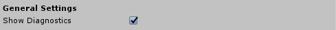

配置诊断系统
通用设置

Show Diagnostics (显示诊断)
指示诊断系统是否要显示已配置的诊断选项。
禁用后，所有已配置的诊断选项将被隐藏。
Profiler Settings (分析器设置)
Show Profiler (显示分析器)
指示是否显示可视化分析器。
Frame Sample Rate (帧采样率)
收集帧以进行帧率计算的时间（以秒为单位）。范围是0到5秒。
Window Anchor (窗口锚点)
探查器窗口应锚定到视口的哪个部分。默认值为 Lower Center 。
Window Offset (窗口偏移)
从视口中心偏移的位置，以放置可视化分析器。偏移量将沿“窗口锚点”属性的方向。
Window Scale (窗口大小)
大小乘数应用于分析器窗口。例如，将该值设置为2将使窗口大小加倍。
Window Follow Speed (窗口跟随速度)
移动分析器窗口以在视口内保持可见性的速度。
Programmatically controlling the Diagnostics System (以编程方式控制诊断系统)
也可以在运行时切换诊断系统和分析器的可见性。例如，下面的代码将隐藏诊断系统和分析器。
CoreServices.DiagnosticsSystem.ShowDiagnostics = false;
CoreServices.DiagnosticsSystem.ShowProfiler = false;